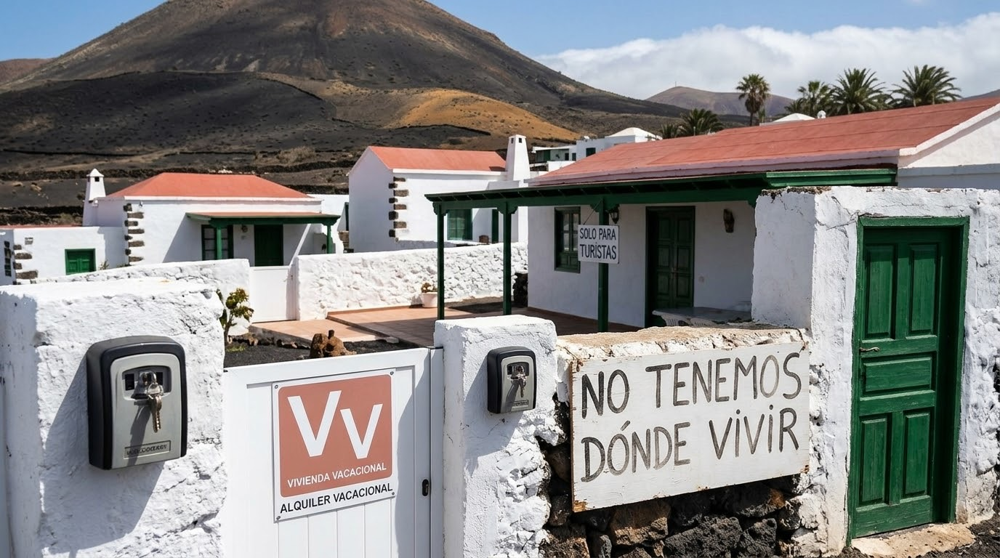

1. Introducción y contexto socioeconómico
El archipiélago canario, y en especial Lanzarote, vive un momento de profunda reflexión sobre su modelo de desarrollo. Si bien la industria turística actúa como el motor económico fundamental de la isla, la falta de planificación en su crecimiento ha provocado desequilibrios estructurales severos que afectan directamente al bienestar de los residentes locales y a la preservación del territorio.

2. El colapso del mercado de la vivienda
El derecho constitucional a una vivienda digna se encuentra gravemente comprometido debido a factores determinantes:
- Proliferación descontrolada del alquiler vacacional: La alta rentabilidad del turismo de corta estancia desvía masivamente el parque de viviendas fuera del mercado residencial tradicional.
- Desaparición del alquiler de larga duración: Los propietarios priorizan al turista, dejando a los trabajadores locales sin opciones habitacionales estables.
- Escasez y precios desorbitados: Los precios actuales de alquiler y compraventa superan con creces la capacidad adquisitiva media de la población insular.
3. Consecuencias críticas sobre la juventud lanzaroteña
Las nuevas generaciones son las que padecen con mayor crudeza esta asfixia habitacional:
- Imposibilidad de emancipación: Destinar porcentajes desproporcionados de la nómina al pago de alquileres imposibilita cualquier proyecto de vida independiente.
- Retraso en la madurez y estabilidad: Se prolonga de forma forzosa la dependencia del núcleo familiar hasta edades avanzadas.
- Riesgo de fuga de talento: La falta de perspectivas de futuro y de vivienda asequible empuja a muchos jóvenes cualificados a emigrar fuera de la isla.
4. Retos colaterales: Servicios y Sostenibilidad
La saturación provocada por el modelo actual también repercute en sectores estratégicos esenciales:
- Déficit de personal en servicios esenciales: Profesionales de la sanidad, la educación o los cuerpos de seguridad encuentran serios problemas para residir en la isla.
- Presión sobre infraestructuras: Estrés hídrico, saturación en la gestión de residuos y colapso de las redes de transporte terrestre.
5. Fuentes de información y portales oficiales
Para profundizar en los datos estadísticos y normativas vigentes, consulte las siguientes instituciones oficiales: